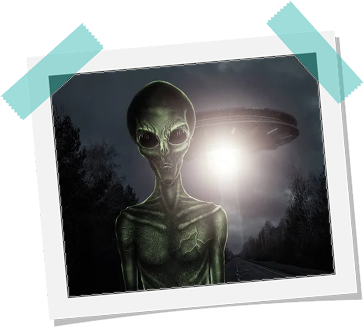

Os alienígenas humanoides são talvez o tipo mais reconhecível de seres extraterrestres descritos em encontros com OVNIs. Testemunhas relataram encontros com seres que se assemelham aos humanos de várias maneiras, com dois braços, duas pernas e uma cabeça. Esses seres geralmente variam em tamanho e aparência, sugerindo uma notável diversidade entre alienígenas humanoides.